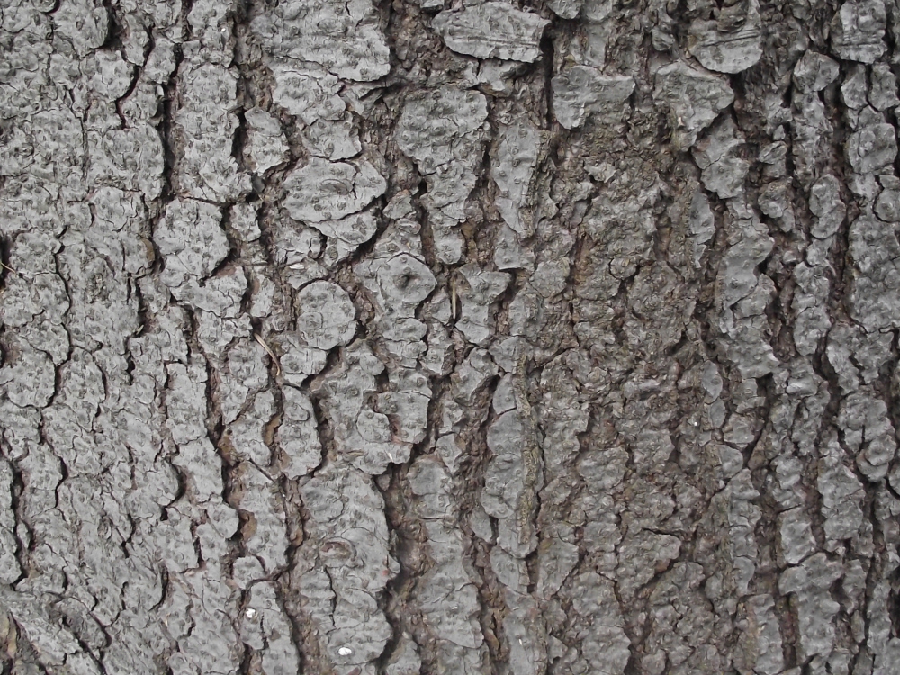
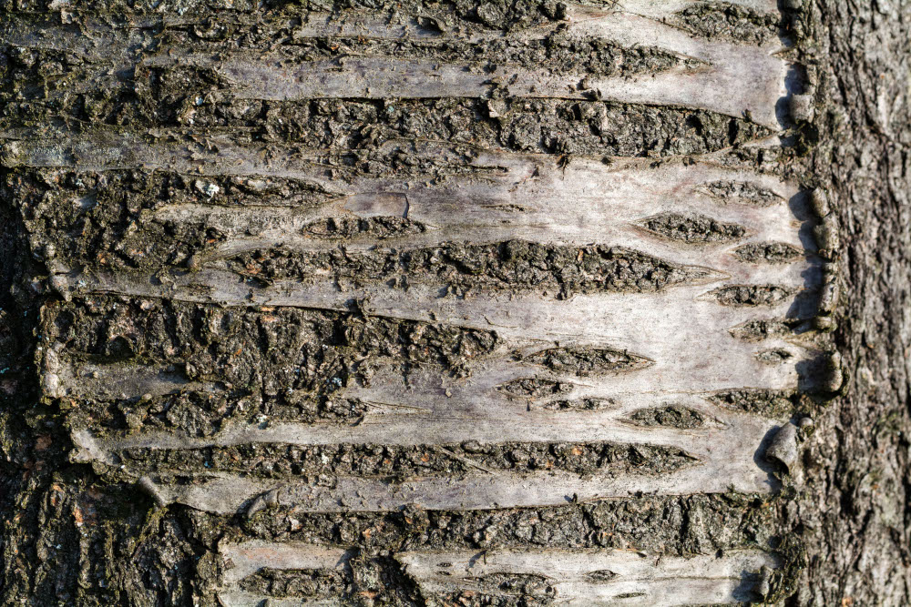
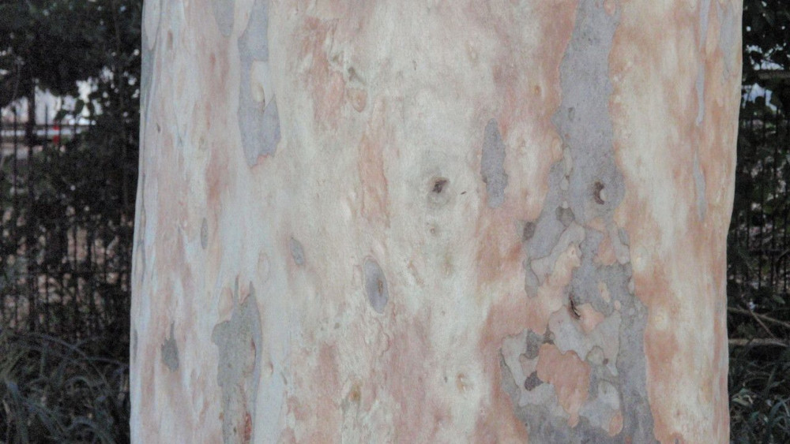

Join Barky the Treebark on an adventure to discover the amazing textures of tree barks and how they help the trees survive in the forest.
What is a tree bark?

Imagine a protective layer that covers a tree, like a sturdy suit of armor. That's tree bark! It's not just a hard surface; it's a living part of the tree, helping it grow, thrive, and adapt to its environment.
What are the different types of tree barks?

Tree barks come in a variety of textures, from smooth and silky to rough and bumpy. Each type of bark has its own special purpose, helping the tree survive in its environment.
How does a smooth bark help the tree?

Just like a shiny mirror reflects light, smooth bark reflects sunlight, helping it to survive in warm climate.